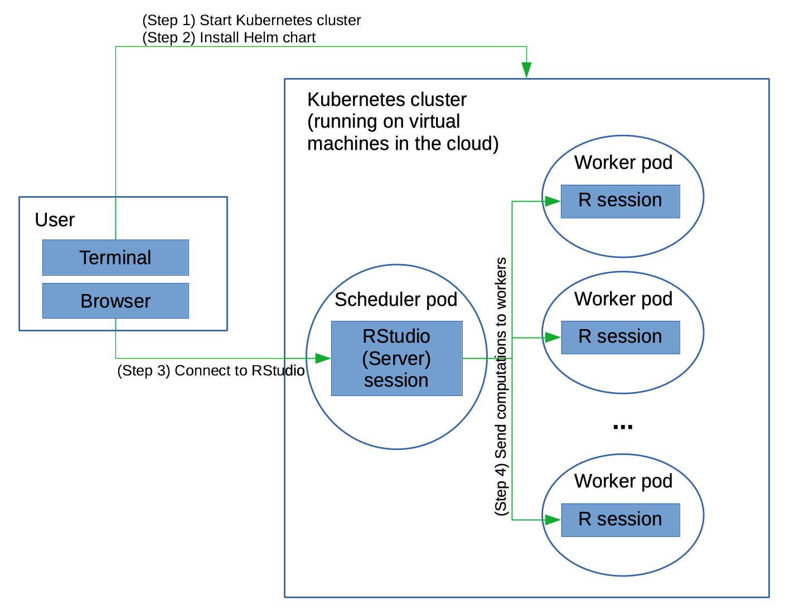
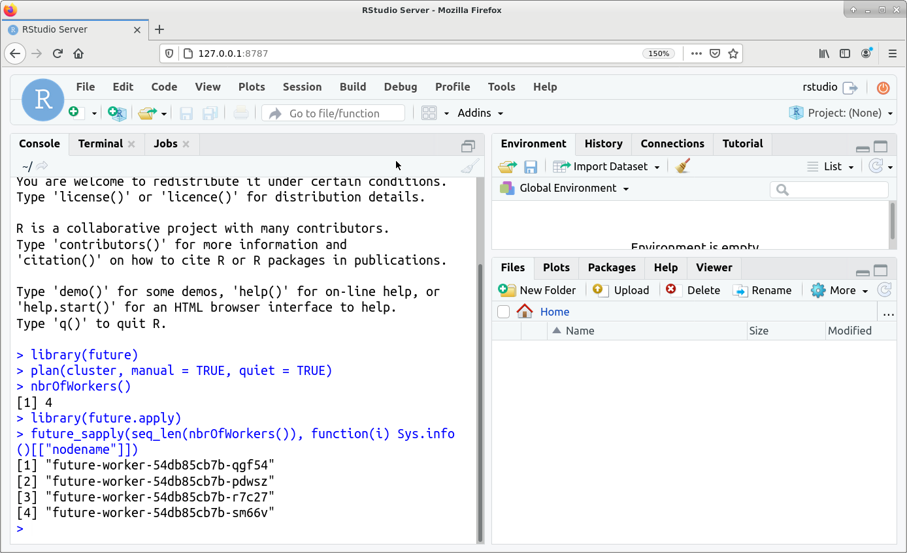

In this post, I’ll demonstrate that you can easily use the future package in R on a cluster of machines running in the cloud, specifically on a Kubernetes cluster.
This allows you to easily doing parallel computing in R in the cloud. One advantage of doing this in the cloud is the ability to easily scale the number and type of (virtual) machines across which you run your parallel computation.
Why use Kubernetes to start a cluster in the cloud?
Kubernetes is a platform for managing containers. You can think of the containers as lightweight Linux machines on which you can do your computation. By using the Kubernetes service of a cloud provider such as Google Cloud Platform (GCP) or Amazon Web Services (AWS), you can easily start up a cluster of (virtual) machines.
There have been (and are) approaches to starting up a cluster of machines on AWS easily from the command line on your laptop. Some tools that are no longer actively maintained are StarCluster and CfnCluster. And there is now something called AWS ParallelCluster. But doing it via Kubernetes allows you to build upon an industry standard platform that can be used on various cloud providers. A similar effort (which I heavily borrowed from in developing the setup described here) allows one to run a Python Dask cluster accessed via a Jupyter notebook.
Many of the cloud providers have Kubernetes services (and it’s also possible you’d have access to a Kubernetes service running at your institution or company). In particular, I’ve experimented with Google Kubernetes Engine (GKE) and Amazon’s Elastic Kubernetes Service (EKS). This post will demonstrate setting up your cluster using Google’s GKE, but see my GitHub future-kubernetes repository for details on doing it on Amazon’s EKS. Note that while I’ve gotten things to work on EKS, there have been various headaches that I haven’t encountered on GKE.
I’m not a Kubernetes expert, nor a GCP or AWS expert (that might explain the headaches I just mentioned), but one upside is that hopefully I’ll go through all the details at a level someone who is not an expert can follow along. In fact, part of my goal in setting this up has been to learn more about Kubernetes, which I’ve done, but note that there’s a lot to it.
More details about the setup, including how it was developed and troubleshooting tips can be found in my future-kubernetes repository.
How it works (briefly)
This diagram in Figure 1 outlines the pieces of the setup.

Work on a Kubernetes cluster is divided amongst pods, which carry out the components of your work and can communicate with each other. A pod is basically a Linux container. (Strictly speaking a pod can contain multiple containers and shared resources for those containers, but for our purposes, it’s simplest just to think of a pod as being a Linux container.) The pods run on the nodes in the Kubernetes cluster, where each Kubernetes node runs on a compute instance of the cloud provider. These instances are themselves virtual machines running on the cloud provider’s actual hardware. (I.e., somewhere out there, behind all the layers of abstraction, there are actual real computers running on endless aisles of computer racks in some windowless warehouse!) One of the nice things about Kubernetes is that if a pod dies, Kubernetes will automatically restart it.
The basic steps are:
- Start your Kubernetes cluster on the cloud provider’s Kubernetes service
- Start the pods using Helm, the Kubernetes package manager
- Connect to the RStudio Server session running on the cluster from your browser
- Run your future-based computation
- Terminate the Kubernetes cluster
We use the Kubernetes package manager, Helm, to run the pods of interest:
- one (scheduler) pod for a main process that runs RStudio Server and communicates with the workers
- multiple (worker) pods, each with one R worker process to act as the workers managed by the future package
Helm manages the pods and related services. An example of a service is to open a port on the scheduler pod so the R worker processes can connect to that port, allowing the scheduler pod RStudio Server process to communicate with the worker R processes. I have a Helm chart that does this; it borrows heavily from the Dask Helm chart for the Dask package for Python.
Each pod runs a Docker container. I use my own Docker container that layers a bit on top of the Rocker container that contains R and RStudio Server.
Step 1: Start the Kubernetes cluster
Here I assume you have already installed:
- the command line interface to Google Cloud,
- the
kubectlinterface for interacting with Kubernetes, and helmfor installing Helm charts (i.e., Kubernetes packages).
Installation details can be found in the future-kubernetes repository.
First we’ll start our cluster (the first part of Step 1 in Figure 1):
gcloud container clusters create \
--machine-type n1-standard-1 \
--num-nodes 4 \
--zone us-west1-a \
--cluster-version latest \
my-clusterI’ve asked for four virtual machines (nodes), using the basic (and cheap) n1-standard-1 instance type (which has a single CPU per virtual machine) from Google Cloud Platform.
You’ll want to specify the total number of cores on the virtual machines to be equal to the number of R workers that you want to start and that you specify in the Helm chart (as discussed below). Here we ask for four one-cpu nodes, and our Helm chart starts four workers, so all is well. See the Modifications section below on how to start up a different number of workers.
Since the RStudio Server process that you interact with wouldn’t generally be doing heavy computation at the same time as the workers, it’s OK that the RStudio scheduler pod and a worker pod would end up using the same virtual machine.
Step 2: Install the Helm chart to set up your pods
Next we need to get our pods going by installing the Helm chart (i.e., package) on the cluster; the installed chart is called a release. As discussed above, the Helm chart tells Kubernetes what pods to start and how they are configured.
First we need to give our account permissions to perform administrative actions:
kubectl create clusterrolebinding cluster-admin-binding \
--clusterrole=cluster-adminNow let’s install the release. This code assumes the use of Helm version 3 or greater (for older versions see my full instructions).
git clone https://github.com/paciorek/future-helm-chart # download the materials
tar -czf future-helm.tgz -C future-helm-chart . # create a zipped archive (tarball) that `helm install` needs
helm install --wait test ./future-helm.tgz # install (start the pods)You’ll need to name your release; I’ve used ‘test’ above.
The --wait flag tells helm to wait until all the pods have started. Once that happens, you’ll see a message about the release and how to connect to the RStudio interface, which we’ll discuss further in the next section.
We can check the pods are running:
kubectl get podsYou should see something like this (the alphanumeric characters at the ends of the names will differ in your case):
NAME READY STATUS RESTARTS AGE
future-scheduler-6476fd9c44-mvmz6 1/1 Running 0 116s
future-worker-54db85cb7b-47qsd 1/1 Running 0 115s
future-worker-54db85cb7b-4xf4x 1/1 Running 0 115s
future-worker-54db85cb7b-rj6bj 1/1 Running 0 116s
future-worker-54db85cb7b-wvp4n 1/1 Running 0 115sAs expected, we have one scheduler and four workers.
Step 3: Connect to RStudio Server running in the cluster
Next we’ll connect to the RStudio instance running via RStudio Server on our main (scheduler) pod, using the browser on our laptop (Step 3 in Figure 1).
After installing the Helm chart, you should have seen a printout with some instructions on how to do this. First you need to connect a port on your laptop to the RStudio port on the main pod (running of course in the cloud):
export RSTUDIO_SERVER_IP="127.0.0.1"
export RSTUDIO_SERVER_PORT=8787
kubectl port-forward --namespace default svc/future-scheduler $RSTUDIO_SERVER_PORT:8787 &You can now connect from your browser to the RStudio Server instance by going to the URL: http://127.0.0.1:8787.
Enter rstudio as the username and future as the password to login to RStudio.
What’s happening is that port 8787 on your laptop is forwarding to the port on the main pod on which RStudio Server is listening (which is also port 8787). So you can just act as if RStudio Server is accessible directly on your laptop.
One nice thing about this is that there is no public IP address for someone to maliciously use to connect to your cluster. Instead the access is handled securely entirely through kubectl running on your laptop. However, it also means that you couldn’t easily share your cluster with a collaborator. For details on configuring things so there is a public IP, please see my repository.
Note that there is nothing magical about running your computation via RStudio. You could connect to the main pod and simply run R in it and then use the future package.
Step 4: Run your future-based parallel R code
Now we’ll start up our future cluster and run our computation (Step 4 in Figure 1):
library(future)
plan(cluster, manual = TRUE, quiet = TRUE)The key thing is that we set manual = TRUE above. This ensures that the functions from the future package don’t try to start R processes on the workers, as those R processes have already been started by Kubernetes and are waiting to connect to the main (RStudio Server) process.
Note that we don’t need to say how many future workers we want. This is because the Helm chart sets an environment variable in the scheduler pod’s Renviron file based on the number of worker pod replicas. Since that variable is used by the future package (via parallelly::availableCores()) as the default number of future workers, this ensures that there are only as many future workers as you have worker pods. However, if you modify the number of worker pods after installing the Helm chart, you may need to set the workers argument to plan() manually. (And note that if you were to specify more future workers than R worker processes (i.e., pods) you would get an error and if you were to specify fewer, you wouldn’t be using all the resources that you are paying for.)
Now we can use the various tools in the future package as we would if on our own machine or working on a Linux cluster.
Let’s run our parallelized operations. I’m going to do the world’s least interesting calculation of calculating the mean of many (10 million) random numbers forty separate times in parallel. Not interesting, but presumably if you’re reading this you have your own interesting computation in mind and hopefully know how to do it using future’s tools such as future.apply and foreach with doFuture.
library(future.apply)
output <- future_sapply(1:40, function(i) mean(rnorm(1e7)), future.seed = TRUE)Note that all of this assumes you’re working interactively, but you can always reconnect to the RStudio Server instance after closing the browser, and any long-running code should continue running even if you close the browser.
Figure 2 shows a screenshot of the RStudio interface.

Working with files
Note that /home/rstudio will be your default working directory in RStudio and the RStudio Server process will be running as the user rstudio.
You can use /tmp and /home/rstudio for files, both within RStudio and within code running on the workers, but note that files (even in /home/rstudio) are not shared between workers nor between the workers and the RStudio Server pod.
To make data available to your RStudio process or get output data back to your laptop, you can use kubectl cp to copy files between your laptop and the RStudio Server pod. Here’s an example of copying to/from /home/rstudio:
## create a variable with the name of the scheduler pod
export SCHEDULER=$(kubectl get pod --namespace default -o jsonpath='{.items[?(@.metadata.labels.component=="scheduler")].metadata.name}')
## copy a file to the scheduler pod
kubectl cp my_laptop_file ${SCHEDULER}:home/rstudio/
## copy a file from the scheduler pod
kubectl cp ${SCHEDULER}:home/rstudio/my_output_file .Of course you can also interact with the web from your RStudio process, so you could download data to the RStudio process from the internet.
Step 5: Cleaning up
Make sure to shut down your Kubernetes cluster, so you don’t keep getting charged.
gcloud container clusters delete my-cluster --zone=us-west1-aModifications
You can modify the Helm chart in advance, before installing it. For example you might want to install other R packages for use in your parallel code or change the number of workers.
To add additional R packages, go into the future-helm-chart directory (which you created using the directions above in Step 2) and edit the values.yaml file. Simply modify the lines that look like this:
env:
# - name: EXTRA_R_PACKAGES
# value: data.tableby removing the “#” comment characters and putting the R packages you want installed in place of data.table, with the names of the packages separated by spaces, e.g.,
env:
- name: EXTRA_R_PACKAGES
value: foreach doFutureIn many cases you may want these packages installed on both the scheduler pod (where RStudio Server runs) and on the workers. If so, make sure to modify the lines above in both the scheduler and worker stanzas.
To modify the number of workers, modify the replicas line in the worker stanza of the values.yaml file.
Then rebuild the Helm chart:
cd future-helm-chart ## ensure you are in the directory containing `values.yaml`
tar -czf ../future-helm.tgz .and install as done previously.
Note that doing the above to increase the number of workers would probably only make sense if you also modify the number of virtual machines you start your Kubernetes cluster with such that the total number of cores across the cloud provider compute instances matches the number of worker replicas.
You may also be able to modify a running cluster. For example you could use gcloud container clusters resize. I haven’t experimented with this.
To modify if your Helm chart is already installed (i.e., your release is running), one simple option is to reinstall the Helm chart as discussed below. You may also need to kill the port-forward process discussed in Step 3.
For some changes, you can also also update a running release without uninstalling it by “patching” the running release or scaling resources. I won’t go into details here.
Troubleshooting
Things can definitely go wrong in getting all the pods to start up and communicate with each other. Here are some suggestions for monitoring what is going on and troubleshooting.
First, you can use kubectl to check the pods are running:
kubectl get podsConnect to a pod
To connect to a pod, which allows you to check on installed software, check on what the pod is doing, and other troubleshooting, you can do the following
export SCHEDULER=$(kubectl get pod --namespace default -o jsonpath='{.items[?(@.metadata.labels.component=="scheduler")].metadata.name}')
export WORKERS=$(kubectl get pod --namespace default -o jsonpath='{.items[?(@.metadata.labels.component=="worker")].metadata.name}')
## access the scheduler pod:
kubectl exec -it ${SCHEDULER} -- /bin/bash
## access a worker pod:
echo $WORKERS
kubectl exec -it <insert_name_of_a_worker> -- /bin/bashAlternatively just determine the name of the pod with kubectl get pods and then run the kubectl exec -it ... invocation above.
Note that once you are in a pod, you can install software in the usual fashion of a Linux machine (in this case using apt commands such as apt-get install).
Connect to a virtual machine
Or to connect directly to an underlying VM, you can first determine the name of the VM and then use the gcloud tools to connect to it.
kubectl get nodes
## now, connect to one of the nodes, 'gke-my-cluster-default-pool-8b490768-2q9v' in this case:
gcloud compute ssh gke-my-cluster-default-pool-8b490768-2q9v --zone us-west1-aCheck your running code
To check that your code is actually running in parallel, one can run the following test and see that the result returns the names of distinct worker pods.
library(future.apply)
future_sapply(seq_len(nbrOfWorkers()), function(i) Sys.info()[["nodename"]])You should see something like this:
[1] future-worker-54db85cb7b-47qsd future-worker-54db85cb7b-4xf4x
[3] future-worker-54db85cb7b-rj6bj future-worker-54db85cb7b-wvp4nOne can also connect to the pods or to the underlying virtual nodes (as discussed above) and run Unix commands such as top and free to understand CPU and memory usage.
Reinstall the Helm release
You can restart your release (i.e., restarting the pods, without restarting the whole Kubernetes cluster):
helm uninstall test
helm install --wait test ./future-helm.tgz Note that you may need to restart the entire Kubernetes cluster if you’re having difficulties that reinstalling the release doesn’t fix.
How does it work?
I’ve provided many of the details of how it works in my future-kubernetes repository.
The key pieces are:
- The Helm chart with the instructions for how to start the pods and any associated services.
- The Rocker-based Docker container(s) that the pods run.
That’s all there is to it … plus these instructions.
Briefly:
- Based on the Helm chart, Kubernetes starts up the ‘main’ or ‘scheduler’ pod running RStudio Server and multiple worker pods each running an R process. All of the pods are running the Rocker-based Docker container
- The RStudio Server main process and the workers use socket connections (via the R function
socketConnection()) to communicate:- the worker processes start R processes that are instructed to regularly make a socket connection using a particular port on the main scheduler pod
- when you run
future::plan()(which callsmakeClusterPSOCK()) in RStudio, the RStudio Server process attempts to make socket connections to the workers using that same port
- Once the socket connections are established, command of the RStudio session returns to you and you can run your future-based parallel R code.
One thing I haven’t had time to work through is how to easily scale the number of workers after the Kubernetes cluster is running and the Helm chart installed, or even how to auto-scale – starting up workers as needed based on the number of workers requested via plan().
Wrap up
If you’re interested in extending or improving this or collaborating in some fashion, please feel free to get in touch with me via the ‘future-kubernetes’ issue tracker or by email.
And if you’re interested in using R with Kubernetes, note that RStudio provides an integration of RStudio Server Pro with Kubernetes that should allow one to run future-based workflows in parallel.
/Chris
Links
- future-kubernetes repository:
- GitHub page: https://github.com/paciorek/future-kubernetes
- future-kubernetes Helm chart:
- GitHub page: https://github.com/paciorek/future-helm-chart
- future-kubernetes Docker container:
- GitHub page: https://github.com/paciorek/future-kubernetes-docker
- future package:
- CRAN page: https://cran.r-project.org/package=future
- GitHub page: https://github.com/HenrikBengtsson/future